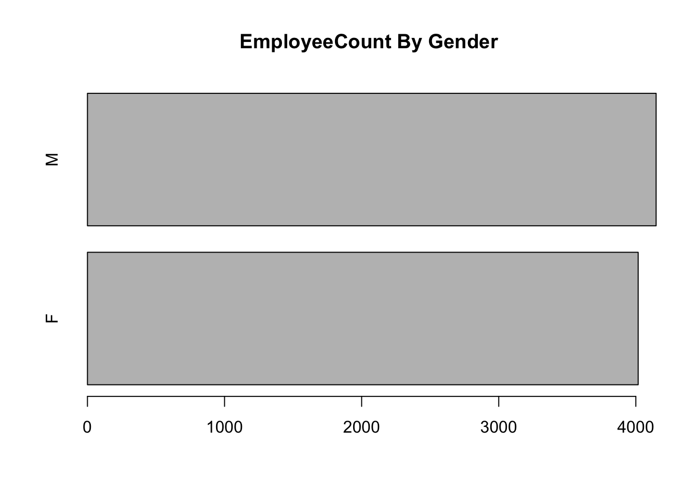
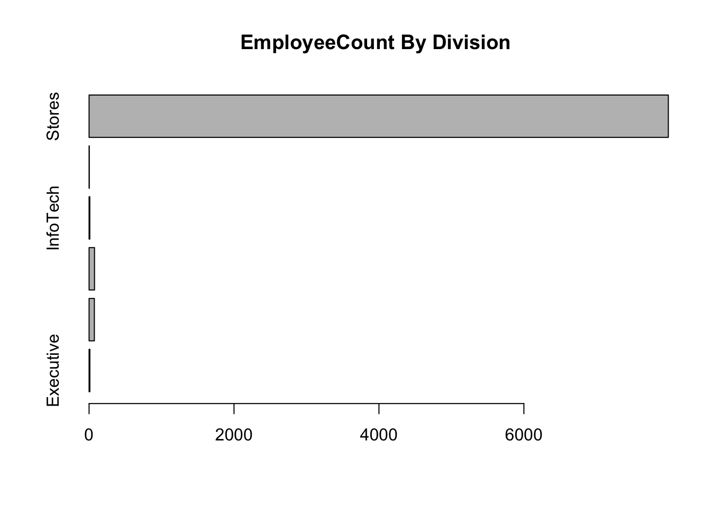
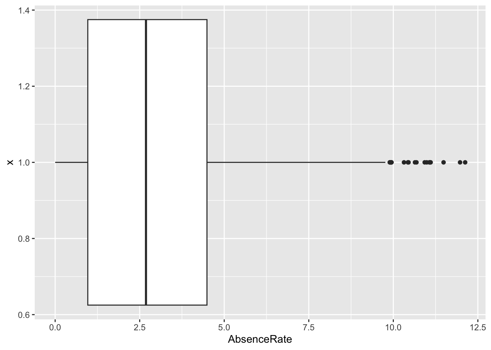
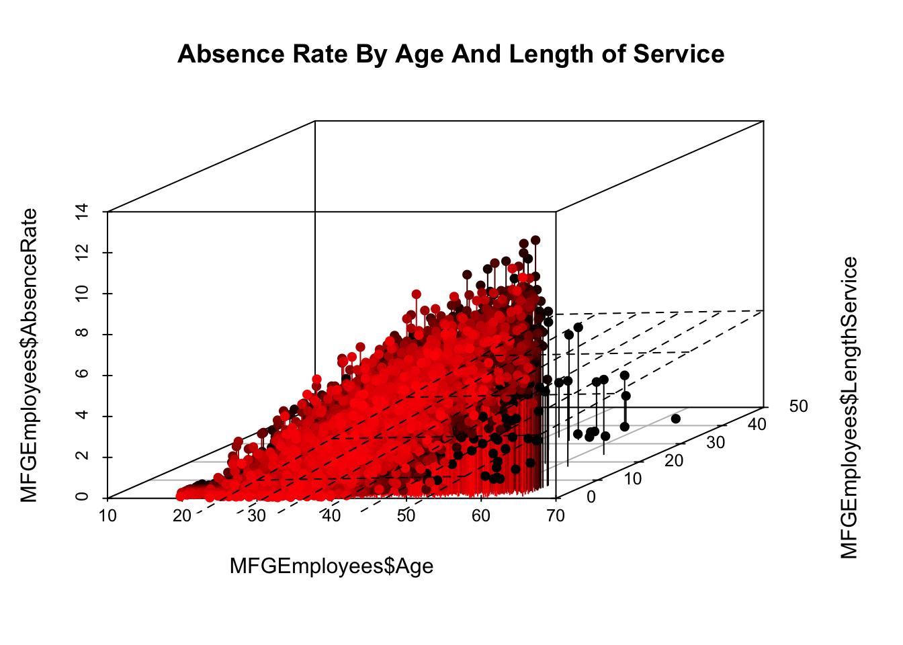

Over last 18 months or so I have been writing LinkedIn blog articles on analytics and their potential use for HR. Most of these articles have hinted that there are many obstacles to the application of analytics to HR.
These obstacles for widespread evidence and use are predominantly human not technical:
Data generation is not the problem. HR data availability and accessability has never been greater to HR professionals.
Technology is not problem. Data science, machine learning, and analytic tools are exploding on to the scene these days. Whether it is enhancements to the R statistical package, or other statistical packages, or developments in other tools like Microsoft Azure Machine Learning or RapidMiner as examples- there have never been more tools to be brought to bear on HR data.
Application of the tools on the data IS the problem. (In this case lack thereof).
This lack of application can occur from:
The HR profession not seeing that most of HR is highly technical. In the past HR might have acknowleged the traditional areas such as salary and wage administration, or labor relations/collective bargaining costing was technical because it was seen as heavily dependent on calculation and data. But for most of the rest of the HR domain HR professionals think its non-technical- whether it be recruitment,training, Health and Safety, Benefits, engagement. To be sure, there are the ‘human’ sides of all areas of HR, but they are all ’as much technical as well. The technical has far too long being ignored by HR professionals.
describes this as ‘reliance on relationships’. ‘Relationships are the antithesis of analytical decsions making.’ .
Not enough HR professionals seeking the informational and analytical side of the picture in their university/college HR studies in preparation for the HR field, and not enough universities/colleges offering studies in People Analytics.
People Analytics- where it exists- being defining too narrowly as just HR metrics or predictive analytic tools to the HR domain. These are part of the picture-yes- but ‘data driven’ can include much more of the statistical methods than just predictive.
Obstacles that organizations inadvertently put in the way - the ‘sacred’ requirement to develop a business case to ‘get’ resources to do any of this- particularly when ‘starting’ can be relatively free to develop proof of concepts.
I am a firm believer in ‘skunkworks’ projects-making do with, and showing what can be done with, what you already have or with what can be obtained free. You will often need to show by simple example what can be done to justify more elaborate formal initiatives later and request additional formal resources.
Its in that spirit, I wanted to walk through an example of People Analytics, and using free tools. This wont be a full fledged best practices or even a robust example. Rather it is intended to be a simple example to illustrate the process and some of the tools. Best practices and robustness comes with learning, use, and mastery over a period of time. Most of us need to start ‘simply’ to start ‘somewhere’.
This example will be on one particular HR metric- absenteeism. The data will be contrived. But it will illustrate very rudimentary People Analytics using the R statistical programming language.
But before we get into this though, we should cover some basic helpful definitions and frameworks. These will help show why we are doing what we are doing.
#Terminology
##People Analytics First of all, I do prefer the term ‘People Analytics’ as compared to some of the other terms used interchangeably. Per the title, I am going to use the term ‘People Analytics’ the way its implicitly defined in the previous article link provided
People analytics is a data-driven approach to managing people at work.
‘Data-driven’ is key. It dispels any notion that data and measurement are not part of managing people. (Sorry to those of you who felt managing people was restricted only to ‘reliance on relationships’)
People Analytics is what happens when you apply Data Science and its principles to the realm of People Management (HR).
It means ‘analysis of data’ then ‘action’. And it means analysis and action. You are managing people through being ‘data driven’ A lot of organizations who try to get people analytics started, get stuck at creation of HR metrics and the use of Business Intelligence tools. These can be and are part of the people analytics picture, to be sure. But slicing and dicing , graphics and visualizations by themselves only take you so far. The addition of statistical analyses and taking informed action on your data are what will propel you forward.
Another reason why I like this definition is that ‘data-driven’ doesn’t unintentionally restrict the type of analyses we do to be data driven. This can include exploratory analysis, predictive analysis, and experimental design. (Often people think only ‘predictive’ in the context of ‘data driven’.)
Because we mention ‘Data Science’ in the context of People Analytics, it is important to define it next to understand why it is so tied to People Analytics.
##Data Science I will share a few definitions.
In their book Practical Data Science With R by Nina Zumel and John Mount https://www.manning.com/books/practical-data-science-with-r on page xix, they define data science as : ‘. managing the process that can transform hypotheses and data into actionable predictions.’
Another definition is from the ‘Field Guide to Data Science’ by Booz, Allen , Hamilton- page 21: http://www.boozallen.com/insights/2015/12/data-science-field-guide-second-edition They define data science as : ‘the art of turning data in actions’
And still another definition from ‘Data Science For Business’ by Foster Provost And Tom Fawcett: http://shop.oreilly.com/product/0636920028918.do Data Science is a set of fundamental principles that guide the extraction of knowledge from data (page 2) . The ultimate goal of data science .improving decision making. (page 5)
All of these definitions clearly line up as being totally consistent with the above definition provided for People Analytics. It means transforming HR hunches, guesses (or really hypotheses) into information/data , analyses, and management actions- actions supported by the data.
#A Framework
Zumel/Mount ‘s definition mentions ’process’. Processes are always require to ‘transform’ something from ‘what it is’ to ‘what it is to become’ - ‘data’ into ‘actions’. This becomes a framework that can guide our efforts and understanding. In their book ‘Practical Data Science With R’ they define the following process for data science on page 6:
Data Science
Define a goal
Collect and Manage Data
Build The Model
Evaluate and Critique Model
Present Results and Document
Deploy Model
I don’t want to belabor the above process significantly in this blog article, because entire books have and are being written on the subjects of data science, predictive analytics, data mining etc. But I will make some general comments about the above steps to set the stage for the illustrative, simple ,rudimentary R example to follow.
Define a goal ,as mentioned above, means identifying first what HR management business problem you are trying to solve. Without a problem/issue we don’t have a goal.
Collect and Manage data. At its simplest, you want a ‘dataset’ of information perceived to be relevant to the problem. The collection and management of data could be a simple extract from the corporate Human Resource Information System, or an output from an elaborate Data Warehousing/Business Intelligence tool used on HR information. For purpose of this blog article illustration we will use a simple CSV file. It also involves exploring the data both for data quality issues, and for an initial look at what the data may be telling you
Build The Model. This step really means, after you have defined the HR business problem or goal you are trying to achieve, you pick a data mining approach/tool that is designed to address that type of problem. With absenteeism as an HR issue, are you trying to predict employee with propensity to high absenteeism from those who aren’t? Are you trying to predict future absenteeism rates? Are you trying to define what is normal absenteeism from that which is atypical or and anomaly? The business problem/goal determine the appropriate data mining tools to consider. Not exhaustive as a list, but common data mining approaches used in modelling are classification,regression, anomaly detection, time series, clustering, association analyses to name a few. These approaches take information/data as inputs , run them through statistical algorithms, and produce output.
Evaluate and Critique Model. Each data mining approach can have many different statistical algorithms to bring to bear on the data. The evaluation is both what algorithms provide the most consistent accurate predictions on new data, and do we have all the relevant data or do we need more types of data to increase predictive accuracy of model on new data. This can be necessarily repetitive and circular activity over time to improve the model
Present Results And Document. When we have gotten out model to an acceptable ,useful predictive level, we document our activity and present results. The definition of acceptable and useful is really relative to the organization, but in all cases would mean , results show improvement over what would have been otherwise. The principle behind data ‘science’ like any science, is that with the same data, people should be able to reproduce our findings/ results.
Deploy Model. The whole purpose of building the model ( which is on existing data) is to:
use the model on future data when it becomes available, to predict or prevent something from happening before it occurs or
to better understand our existing business problem to tailor more specific responses
Both R and other solutions allow you to save the model, so it can be used on other data. Lets now turn to a rudimentary People Analytics (Data driven People Management(HR) example in R.
This blog article is ‘Part 1’. The length of covering this in a single article would push the limits of comfortable reading length for a single article. So part 1 will cover the first 2 steps of the above process.
#An R Example
##1.Define the goal (or HR business problem/issue).
A hypothetical company MFG has decided that it needs to at absenteeism. It wants answers to the following questions:
What is its rate of absenteeism?
Does anyone have excessive absenteeism?
Is is the same across the organization?
Does it vary by gender?
Does it vary by length of service or age? Its guesses are that initially age and length of service may be related to absenteeism rates.
Can it predict next year’s absenteeism?
If so, how well can it predict?
Can we reduce our absenteeism?
If they can make future People Management decisions “driven” by what the data is telling them, then they will feel they have started the People Analytics journey.
##2.Collect and Manage Data.
Let us suppose this is a skunkworks project. Formal separate resources have not be identified for this initiative. Only an initial look at recent data is possible. The HRIS system is able to provide some rudimentary information covering absences only for 2015 It was able to generate the following information as a CSV file (comma separated values):
The first thing we should do is check on quality of data. Data will rarely be clean or perfect when we receive it. Either questionnable data should be corrected(preferred) or deleted.
summary(MFGEmployees)
EmployeeNumber Surname GivenName Gender
Min. : 1 Length:8336 Length:8336 Length:8336
1st Qu.:2085 Class :character Class :character Class :character
Median :4168 Mode :character Mode :character Mode :character
Mean :4168
3rd Qu.:6252
Max. :8336
City JobTitle DepartmentName StoreLocation
Length:8336 Length:8336 Length:8336 Length:8336
Class :character Class :character Class :character Class :character
Mode :character Mode :character Mode :character Mode :character
Division Age LengthService AbsentHours
Length:8336 Min. : 3.505 Min. : 0.0121 Min. : 0.00
Class :character 1st Qu.:35.299 1st Qu.: 3.5759 1st Qu.: 19.13
Mode :character Median :42.115 Median : 4.6002 Median : 56.01
Mean :42.007 Mean : 4.7829 Mean : 61.28
3rd Qu.:48.667 3rd Qu.: 5.6239 3rd Qu.: 94.28
Max. :77.938 Max. :43.7352 Max. :272.53
BusinessUnit
Length:8336
Class :character
Mode :character
The only thing that stands out initially is that age has some questionable data- some one who is 3 and someone who is 77. The range for purposes of this example should be 18 to 65 .Normally you would want to clean the data by getting the correct information and then changing it. For expediency of the example we will delete the problem records
We can now see our metric AbsenceRate has been calculated and created.
###Explore The Data Part of collecting and managing data is ‘Exploratory’ Analysis.
Lets start with bar graphs of some of the categorical data
counts <-table(MFGEmployees$BusinessUnit)barplot(counts, main ="EmployeeCount By Business Units", horiz =TRUE)
counts <-table(MFGEmployees$Gender)barplot(counts, main ="EmployeeCount By Gender", horiz =TRUE)

counts <-table(MFGEmployees$Division)barplot(counts, main ="EmployeeCount By Division", horiz =TRUE)

Lets ask some of our questions answered through this exploratory analysis.
First of all, what is our absenteeism rate?
mean(MFGEmployees$AbsenceRate)
[1] 2.907265
library(ggplot2)ggplot() +geom_boxplot(aes(y = AbsenceRate, x =1), data = MFGEmployees) +coord_flip()

The absence rate is 2.9.
Does anyone have excessive absenteeism?
The boxplot shows the mean and standard deviation of the data. Any observations beyond 3 standard deviations shows up as dots. So at least under that definition of outliers, some people show way more absenteeism than 99% of employees
Does it vary across the organization?
library(ggplot2)#library(RcmdrMisc)ggplot() +geom_boxplot(aes(y = AbsenceRate, x = Gender), data = MFGEmployees) +coord_flip()
Group.1 Group.2 x
1 Executive F 2.976419
2 FinanceAndAccounting F 2.172804
3 HumanResources F 3.014491
4 InfoTech F 3.298112
5 Legal F 3.298112
6 Stores F 3.169049
7 Executive M 1.779546
8 FinanceAndAccounting M 1.634077
9 HumanResources M 2.214311
10 InfoTech M 1.773538
11 Legal M 2.058530
12 Stores M 2.680788
If varies significantly by the interaction of gender and division.
These are just a handful of the categorical summaries we could do.
Does AbsenceRate vary by length of service and age?
##3. Build The model One of the questions asked in the defining the goal step was ‘whether it was possible to predict absenteeism?’
Absence Rate is a numeric continuous value. In the ‘Building a model’ step we have to chose what models/statistical algorithms to use. Prediction of a numerics continous values suggests a couple of models that could be brought to bear: Regression trees and linear regression. There are many more but for purposes of this article we will look at these
###3.1 Regression Trees Regression Trees will allow for use of both categorical and numeric values as predictors.Lets choose the following data as potential predictors in this analysis:
Gender
Department Name
Store Location
Division
Age
Length of Service
Business Unit
Absence Rate will be the the ‘target’ or thing to be predicted.
library(rattle)
Loading required package: tibble
Loading required package: bitops
Rattle: A free graphical interface for data science with R.
Version 5.5.1 Copyright (c) 2006-2021 Togaware Pty Ltd.
Type 'rattle()' to shake, rattle, and roll your data.
library(magrittr) building <-TRUEscoring <-! buildingcrv$seed <-42MYdataset <- MFGEmployeesstr(MYdataset)
The regression decision tree shows that age is a big factor in determining absence rate with gender playing a small part in one of the age ranges: >43 and <52 with males having a lower absence rate in this group. Almost all categorical information other than gender doesnt look like its helps in prediction.
Now lets look at linear regression as another model. The restriction in linear regression is that it can only accept non-categorical variables. Categorical variables can sometimes be made numeric through transformation, but that is beyond the scope of this article.
###3.2 Linear Regression
In linear regression, then, we will need to restrict it to numeric variables:
Call:
lm(formula = AbsenceRate ~ Age + LengthService, data = MFGEmployees)
Residuals:
Min 1Q Median 3Q Max
-5.3578 -0.8468 -0.0230 0.8523 5.1030
Coefficients:
Estimate Std. Error t value Pr(>|t|)
(Intercept) -5.190213 0.068959 -75.27 <2e-16 ***
Age 0.202593 0.001510 134.16 <2e-16 ***
LengthService -0.085309 0.005652 -15.09 <2e-16 ***
---
Signif. codes: 0 '***' 0.001 '**' 0.01 '*' 0.05 '.' 0.1 ' ' 1
Residual standard error: 1.264 on 8162 degrees of freedom
Multiple R-squared: 0.6887, Adjusted R-squared: 0.6886
F-statistic: 9027 on 2 and 8162 DF, p-value: < 2.2e-16
The summary shows an adjusted R-squared of .68 which means approximately 68% of the variance is accounted by age and length of service. The variables are both significant at Pr(>|t|) of <2e-16. These results are using the entirety of the existing data to predict itself.
Graphically it look like this:
#2D plot of Age and AbsenceRatelibrary(ggplot2)ggplot() +geom_point(aes(x = Age,y = AbsenceRate),data=MFGEmployees) +geom_smooth(aes(x = Age,y = AbsenceRate),data=MFGEmployees,method ='lm')
`geom_smooth()` using formula = 'y ~ x'
#3D Scatterplot of Age and Length of Service with Absence Rate - with Coloring and Vertical Lines# and Regression Plane library(scatterplot3d) s3d <-scatterplot3d(MFGEmployees$Age,MFGEmployees$LengthService,MFGEmployees$AbsenceRate, pch=16, highlight.3d=TRUE,type="h", main="Absence Rate By Age And Length of Service")fit <-lm(MFGEmployees$AbsenceRate ~ MFGEmployees$Age+MFGEmployees$LengthService) s3d$plane3d(fit)

4.Evaluate And Critique Model
Up till now we have concentrated on producing a couple of models. The effort so far has had one weakness. We have used all of our data for 2015 to generate the models. They can both predict, but the prediction are based on existing data- dat already known. We dont know how well it will predict on data it hasnt seen yet.
To evaluate and critique the models, we need to train the model using part of the data and hold out a portion to test on.We will divide the data into 10 parts- using 9 parts as training data and 1 part as testing data, and alternate which are the 9 and the 1, so that each of the 10 parts gets to be training data 9 times and testing data once.
The R “caret” library helps us do that. We will run both a regression tree and linear regression and compare how they do against each other.
set.seed(998)inTraining <-createDataPartition(MFGEmployees$BusinessUnit, p = .75, list =FALSE)training <- MFGEmployees[inTraining,]testing <- MFGEmployees[ - inTraining,]fitControl <-trainControl(## 10-fold CVmethod ="repeatedcv",number =10,## repeated ten timesrepeats =10)set.seed(825)lmFit1 <-train(AbsenceRate ~ Age + LengthService, data = training,method ="lm",trControl = fitControl)lmFit1
Linear Regression
6124 samples
2 predictor
No pre-processing
Resampling: Cross-Validated (10 fold, repeated 10 times)
Summary of sample sizes: 5511, 5511, 5512, 5512, 5511, 5512, ...
Resampling results:
RMSE Rsquared MAE
1.269977 0.6909094 1.007153
Tuning parameter 'intercept' was held constant at a value of TRUE
The rSquared shows a value of .688 which means even with sampling different parts of the data on 10 fold cross validation the use of age and length of service seems to be pretty robust so far.
Next the decision tree. The first time with just the numeric variables.
set.seed(825)rpartFit1 <-train(AbsenceRate ~ Age + LengthService, data = training,method ="rpart",trControl = fitControl,maxdepth =5)
Warning in nominalTrainWorkflow(x = x, y = y, wts = weights, info = trainInfo,
: There were missing values in resampled performance measures.
rpartFit1
CART
6124 samples
2 predictor
No pre-processing
Resampling: Cross-Validated (10 fold, repeated 10 times)
Summary of sample sizes: 5511, 5511, 5512, 5512, 5511, 5512, ...
Resampling results across tuning parameters:
cp RMSE Rsquared MAE
0.06330829 1.431901 0.6062148 1.140352
0.09451716 1.557060 0.5344593 1.260302
0.48920642 1.963226 0.4741241 1.607013
RMSE was used to select the optimal model using the smallest value.
The final value used for the model was cp = 0.06330829.
You will notice that the decision tree with 10 fold cross validation didnt perform as well with an RSquared of approximately .60
The second time with the original categorical and numeric varibles used.
Warning in nominalTrainWorkflow(x = x, y = y, wts = weights, info = trainInfo,
: There were missing values in resampled performance measures.
rpartFit2
CART
6124 samples
7 predictor
No pre-processing
Resampling: Cross-Validated (10 fold, repeated 10 times)
Summary of sample sizes: 5511, 5511, 5512, 5512, 5511, 5512, ...
Resampling results across tuning parameters:
cp RMSE Rsquared MAE
0.06330829 1.431901 0.6062148 1.140352
0.09451716 1.557060 0.5344593 1.260302
0.48920642 1.963226 0.4741241 1.607013
RMSE was used to select the optimal model using the smallest value.
The final value used for the model was cp = 0.06330829.
Here when you include all originally used vaiables in 10 fold cross validation, the RSquared changed little and is still around .60.
So far the linear regression is performing better
##5.Present Results and Document
The presenting of results and documenting is something that R helps in. You may not have realized it, but the R Markdown language has been used to create the full layout of these two blog articles. HTML,PDF and Word formats can be produced.
R Markdown allows the reader to see exactly what you having been doing , so that an independent person can replicate your results, to confirm what you have done. It shows the R code/commands, the statistical results and graphics.
These are:
Absenteeism-Part1.Rmd and
Absenteeism-Part2.Rmd
For presentation formats beyond this, you may have to use other tools.
##6.Deploy Model Once you have evaluated your model(s) and chosen to use them, they need to be deployed so that they can be used. At the simplest level, ‘deploy’ can mean using the ‘predict’ function in R (where applicable) in conjunction with your model.
In R, you can also ‘publish’ you model as an R HTTP service so that others can use it.(That is beyond the scope of this article)
Can it predict next year absenteeism?
Lets predict the 2016 Absenteeism from the 2015 model.
If we make the simplifying assumption that nobody quits and nobody new comes in, we can take the 2015 data and add 1 to age and 1 to years of service for an approximation of new 2016 data before we get to 2016.
To get single estimate for 2016 we ask for mean of absence rate.
mean(Absence2016Data$AbsenceRate)
[1] 3.040885
mean(MFGEmployees$AbsenceRate)
[1] 2.907265
The first figure above is the 2016 prediction, the second is the 2015 actual for comparison.
If so, how well can it predict?
As mentioned previously, about 68% of the variation is accounted for in a linear regression model using age and length of service.
Can we reduce our absenteeism?
On the surface, only getting the age reduced and length of service increased will reduce absensteeism with this model.
Obviously, absenteeism is much more complex that just the rudimentary data we have collected. A serious look at this metric and problem would require more and different kinds of data. As mentioned before , the raw data used in this article and analysis is totally contrived to illustrate an example.
#Final Comments
The purposes of these two blogs articles was to:
show that R could be used to do People Analytics
show that People Analytics is the application of the Data Science to People (HR) Management and decision making.
show by a rudimentary/simple (not necessarily rigorous) example that the ‘data science’ capability is in your hands.
show that ‘free’ tools can be used to start the ‘People Analytics’ journey.
Its time to apply data science to People Management, and be data-driven.